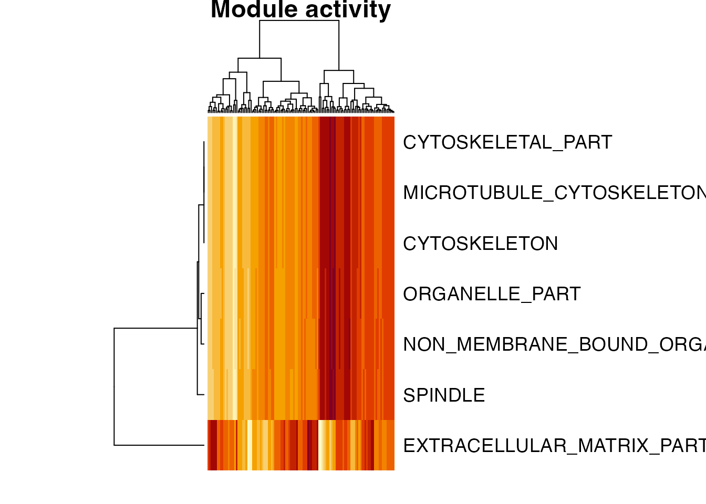

Getting started with eemr
eemr.RmdBackground
eemr is an R/Rcpp binding for the original eemCpp command-line tool. It implements coherence-based expression module (EEM) search: given an expression matrix and a collection of candidate gene sets (e.g. from MSigDB), it finds, for each gene set, the largest subset of genes whose expression is coherent across samples (an “expression module”), and assigns that module a significance p-value based on a randomization test. It’s conceptually similar to gene set enrichment analysis, but the “signal” being tested is coherence of expression rather than differential expression, and only the coherent subset of each gene set is retained.
The whole pipeline runs in memory from R – no intermediate files, no external CLI binary.
library(eemr)Input data
eem_search() takes two inputs:
-
expr: a numeric matrix of expression values, genes in rows (with rownames), samples in columns. -
geneSets: a named list of character vectors of gene ids, one entry per candidate gene set.read_gmt()reads these from a standard GMT file (as used by MSigDB/GSEA: one gene set per line, tab-delimited, columns are id, description, gene1, gene2, …).
This package bundles a small real dataset (1000 genes x 118 breast cancer samples, and 100 candidate GMT gene sets) for examples and testing:
expr_file <- system.file("extdata", "test.tab", package = "eemr")
gmt_file <- system.file("extdata", "test.gmt", package = "eemr")
expr <- as.matrix(read.table(expr_file, header = TRUE, row.names = 1,
sep = "\t", check.names = FALSE))
geneSets <- read_gmt(gmt_file)
dim(expr)
#> [1] 1000 118
length(geneSets)
#> [1] 100Running the search
res <- eem_search(expr, geneSets)The result is a data.frame with one row per gene set that passed the
search, sorted by decreasing pvalue (more significant
first):
head(res[, c("id", "pvalue", "pvalue1", "pvalue2",
"nSeedGenes", "nModuleGenes")], 10)
#> id pvalue pvalue1 pvalue2 nSeedGenes
#> 1 SPINDLE 14.809837 13.408965 14.809837 10
#> 2 MICROTUBULE_CYTOSKELETON 11.518622 10.411940 11.518622 18
#> 3 CYTOSKELETAL_PART 9.007283 8.155555 9.007283 26
#> 4 CYTOSKELETON 7.872272 6.716510 7.872272 34
#> 5 NON_MEMBRANE_BOUND_ORGANELLE 7.646947 6.903397 7.646947 40
#> 6 ORGANELLE_PART 6.781448 5.921035 6.781448 57
#> 7 EXTRACELLULAR_MATRIX_PART 6.030158 4.818086 6.030158 13
#> 8 MEMBRANE 5.781970 5.120973 5.781970 149
#> 9 PROTEINACEOUS_EXTRACELLULAR_MATRIX 5.131244 4.253077 5.131244 30
#> 10 NUCLEUS 3.883952 2.955901 3.883952 67
#> nModuleGenes
#> 1 10
#> 2 11
#> 3 11
#> 4 11
#> 5 12
#> 6 13
#> 7 6
#> 8 20
#> 9 8
#> 10 10-
pvalue1is an approximate, hypergeometric-based p-value used to screen candidate gene sets cheaply. -
pvalue2is the accurate, permutation-based p-value, calculated only for gene sets that pass thepvalue1Cutoffscreen (-1means it wasn’t calculated). -
pvalueis the one actually reported (pvalue2when available, otherwisepvalue1). - All three are on the -log10 scale, so larger values are more significant.
-
seedGenes/moduleGeneslist the gene set’s original genes and the coherent subset found by the search (;-separated).
Key parameters (see ?eem_search):
-
relativeRadius: target fraction of all genes that fall within the module search radius (default0.05). -
pvalue1Cutoff: -log10 cutoff used to screen candidates before the accurate p-value is calculated (default-log10(0.05)); use-1to disable screening. -
itr: number of permutations for the accurate p-value (default300).
Module activity matrix
Once you have modules, module_activity() turns them into
a module x sample matrix, useful for downstream analyses (clustering
samples, correlating with clinical variables, etc.). For each module it
averages the (row-standardized, by default) expression of its
moduleGenes across samples:
activity <- module_activity(expr, res)
dim(activity)
#> [1] 7 118
activity[1:5, 1:5]
#> b0359 s0018 s0107 s0183 b0318
#> SPINDLE 1.455746 0.4958813 -0.4685343 1.810715 0.3980437
#> MICROTUBULE_CYTOSKELETON 1.341880 0.6116425 -0.5466202 1.753574 0.4379854
#> CYTOSKELETAL_PART 1.341880 0.6116425 -0.5466202 1.753574 0.4379854
#> CYTOSKELETON 1.341880 0.6116425 -0.5466202 1.753574 0.4379854
#> NON_MEMBRANE_BOUND_ORGANELLE 1.403883 0.6201511 -0.5539144 1.821083 0.4509757By default only modules with pvalue >= 6 (-log10
scale, i.e. p < 1e-6) are included; pass
pvalueCutoff = NULL to include every module in
res, or any other -log10 threshold:
nrow(module_activity(expr, res, pvalueCutoff = NULL))
#> [1] 23
nrow(module_activity(expr, res, pvalueCutoff = 10))
#> [1] 2A quick look at how the top modules’ activity varies across samples:
